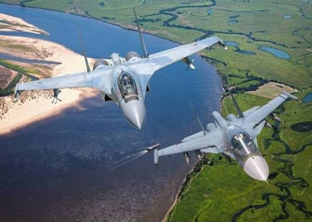
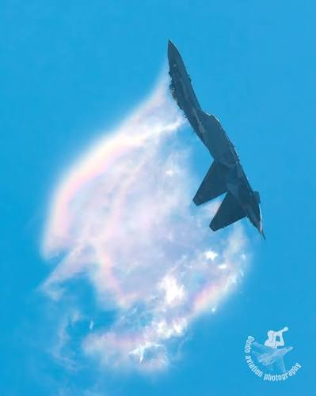
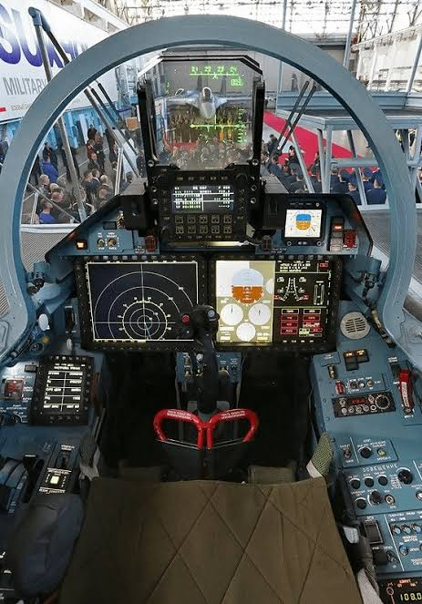

An exhaustive technical analysis repository of the Sukhoi Su-35S (NATO reporting name: Flanker-E). Developed by KNAAPO (Komsomolsk-on-Amur Aircraft Plant), this deep modernization of the Su-27 airframe integrates 3D thrust-vectoring AL-41F1S engines, the Irbis-E PESA radar system, and comprehensive electronic warfare suites.
Max Speed
Mach 2.25 (2,400 km/h)
Combat Radius
1,600 km (Internal)
Radar Range
400 km (Irbis-E)
Max Payload
8,000 kg (12 Hardpoints)
Reinforced titanium airframe design offering extended service life without the need for front-mounted canards.
Extensive integration of high-strength titanium alloys within the central load-bearing fuselage frames extends total airframe operational lifespan to 4,000 flight hours (approx. 30 operational years).
Ref: KNAAPO Airframe DatasheetFrontal Radar Cross Section (RCS) is reduced to 1.0 – 3.0 m² using Radar-Absorbing Materials (RAM) applied to engine air intakes, canopy coatings, and leading edge dielectric structures.
Ref: Jane's All the World's AircraftUnlike the early Su-37 prototypes, the production Su-35S eliminates front canards. High Angle-of-Attack (AoA) control is achieved entirely via advanced digital Quadruplex Fly-By-Wire (FBW) controls.
Ref: Sukhoi Design Bureau Technical Review| Parameter | Metric Value | Imperial Equivalent | Operational Context |
|---|---|---|---|
| Overall Length | 21.9 m | 71.9 ft | Includes tail cone antenna housing |
| Wingspan | 15.3 m | 50.2 ft | Includes wingtip EW pods (L175M) |
| Height | 5.9 m | 19.4 ft | Top of twin vertical stabilizers |
| Empty Weight | 17,200 kg | 37,920 lb | Standard operational empty config |
| Max Takeoff Weight (MTOW) | 34,500 kg | 76,059 lb | Full internal fuel + max ordnance load |
| Internal Fuel Capacity | 11,500 kg | 25,353 lb | No external tanks required for baseline combat radius |
Twin turbofans equipped with independently controlled 3D thrust-vectoring nozzles.
The Su-35S is powered by two Saturn AL-41F1S (Item 117S) afterburning turbofan engines derived from the AL-31F series. The engines feature an increased fan diameter (932 mm) and advanced low-pressure turbine stages.
Per engine (Standard Military Power)
Per engine (Emergency Combat Mode)
Pitch & Yaw omnidirectional control
The thrust vectoring nozzles are integrated directly into the Fly-By-Wire system. This allows the pilot to execute post-stall maneuvers including Pugachev's Cobra, Frolov Chakra (Kulbit), and tight nose-pointing turns at near-zero airspeed.

Integrated sensor fusion uniting passive radar, optical tracking, and digital jamming suites.
A long-range Passive Electronically Scanned Array (PESA) radar mounted on a hydraulic actuator.
Nose-mounted Infrared Search and Track (IRST) sensor allowing radar-silent thermal acquisition.
Wingtip-mounted Electronic Countermeasures (ECM) pod suite for self-defense and radar jamming.
Full digital glass cockpit interface replacing legacy analog dials with dual MFDs.

Two 15-inch color LCD screens (1400×1050 resolution) capable of split-screen tactical, navigation, engine telemetry, and weapons loadout displays.
Wide-angle collimated glass display projecting speed, altitude, target lock box, and flight envelope vector lines directly into pilot Line-Of-Sight (LOS).
Hands On Throttle-And-Stick controls integrated with the Sura-M Helmet-Mounted Sight (HMS) for off-boresight high-off-axis missile locking.
12 External Hardpoints capable of mounting up to 8,000 kg of precision ordnance.
Documented combat deployments and export user records.
[1] United Aircraft Corporation (UAC)
Official Su-35 Flight Envelope & Performance Technical Datasheets (Moscow, Russia).
[2] Jane's All the World's Aircraft
Developmental History & Radar Systems Evaluation of the Flanker-E (IHS Markit).
[3] Tikhomirov NIIP Institute
Technical Specifications for the Irbis-E N035 Multi-Mode Radar Suite.
[4] NPO Saturn (UEC)
AL-41F1S Engine Architecture & 3D Thrust Vectoring Nozzle Dynamics Manual.
[5] KRET (Radio-Electronic Technologies)
Khibiny-M Electronic Warfare Defense Suite Capabilities Whitepaper.
[6] Royal United Services Institute (RUSI)
Analytical Report on Russian Air Superiority Tactics & Su-35S Combat Deployments.